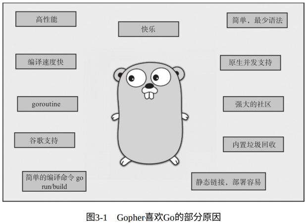
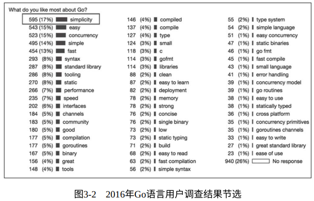

1. 追求简单，少即是多
简单是一种伟大的美德，但我们需要更艰苦地努力才能实现它，并需要经过一个教育的过程才能去欣赏和领会它。但糟糕的是：复杂的东西似乎更有市场。
——Edsger Dijkstra，图灵奖得主
Go 语言实际上是很复杂的，但只是让大家感觉很简单
——Rob Pike，Go 语言之父


- Go 的设计者们在语言设计之初就 拒绝走语言特性融合的道路，而选择了“做减法”，选择了“简单”，他们把复杂性留给了语言自身的设计和实现（Go 核心开发组自己），而将简单、易用和清晰留给了广大 Gopher：
- 简洁、常规的语法（不需要解析符号表），它仅有 25 个关键字；
- 内置垃圾收集，降低开发人员内存管理的心智负担；
- 没有头文件；
- 显式依赖（package）；
- 没有循环依赖（package）；
- 常量只是数字；
- 首字母大小写决定可见性；
- 任何类型都可以拥有方法（没有类）；
- 没有子类型继承（没有子类）；
- 没有算术转换；
- 接口是隐式的（无须 implements 声明）；
- 方法就是函数； 接口只是方法集合（没有数据）；
- 方法仅按名称匹配（不是按类型）；
- 没有构造函数或析构函数；
- n++和 n--是语句，而不是表达式；
- 没有++n 和--n； 赋值不是表达式；
- 在赋值和函数调用中定义的求值顺序（无“序列点”概念）；
- 没有指针算术； 内存总是初始化为零值；
- 没有类型注解语法（如 C++中的 const、static 等）；
- 没有模板/泛型； 没有异常（exception）；
- 内置字符串、切片（slice）、map 类型；
- 内置数组边界检查；
- 内置并发支持；
- Go 设计者推崇 “最小方式”思维 ：即一件事情仅有一种方式或数量尽可能少的方式去完成，这大大减少了开发人员在选择路径方式及理解他人所选路径方式上的心智负担
- 在 Go 演化进入关键阶段（走向 Go 2）的今天，有人向 Go 开发团队提出过这样一个问题：Go 后续演化的最大难点是什么？Go 开发团队的一名核心成员回答道：“最大的难点是如何继续保持 Go 语言的简单。”
2. 偏好组合，正交解耦
当我们有必要采用另一种方式处理数据时，我们应该有一些耦合程序的方式，就像花园⾥将浇⽔的软管通过预置的螺丝扣拧入另一段那样，这也是 Unix IO 采用的方式。
——Douglas McIlroy，Unix 管道的发明者（1964）
- Go 语言本质上不属于经典 OO 语言范畴。Go 语言遵从的设计哲学是
组合，通过组合将程序各个部分有机耦合在一起 - 在语言设计层面，Go 提供了正交的语法元素供后续组合使用，包括：
- Go 语言无类型体系（type hierarchy），类型之间是独⽴的，没有子类型的概念；
- 每个类型都可以有自己的方法集合，类型定义与方法实现是正交独立的；
- 接口（interface）与其实现之间隐式关联；
- 包（package）之间是相对独立的，没有子包的概念；
Go 语言为我们呈现了这样一幅图景：一座座没有关联的“孤岛”，但每个岛内又都很精彩。现在摆在面前的工作就是以最适当的方式在这些孤岛之间建立关联（耦合），形成一个整体。
Go采用了组合的方式，也是唯一的方式Go 语言提供的最为直观的组合的语法元素是
类型嵌入（type embedding）。通过类型嵌入，我们可以将已经实现的功能嵌入新类型中，以快速满足新类型的功能需求。我们也可以称之为垂直组合interface是 Go 语言中真正的“魔法”，是 Go 语言的一个创新设计， 它只是方法集合，且与实现者之间的关系是隐式的，它让程序各个部 分之间的耦合降至最低，同时是连接程序各个部分的“纽带”。隐式的 interface 实现会不经意间自然而然地满足依赖抽象、里氏替换、接口隔离等设计原则。我们也可称之为水平组合
综上：
- 组合原则的应用塑造了 Go 程序的骨架结构；
- 类型嵌入为类型提供垂直扩展能力；
- interface 是水平组合的关键，它好比程序肌体上 的“关节”，给予连接“关节”的两个部分各自“自由活动”的能力，而整体上又实现了某种功能；
3. 原生并发，轻量高效
并发是有关结构的，而并行是有关执行的。
——Rob Pike（2012）
- Go 的设计者敏锐地把握了 CPU 向多核方向发展的这一趋势，在决定不再使用 C++而去创建一门新语言的时候，果断将 面向多核、原生内置并发支持 作为新语言的设计原则之一
- Go 语言原生支持并发的设计哲学体现在以下几点：
- Go 语言采用 轻量级协程并发模型，使得 Go 应用在面向多核硬件时更具可扩展性
- Go 放弃了传统的基于操作系统线程的并发模型，而采用了 用户层轻量级线程（Go 称其为 goroutine）
- Go 运行时默认每个 goroutine 分配的栈空间仅为 2KB。goroutine 调度的切换也不用陷入操作系统内核层完成，代价很低。因此，在一个 Go 程序中可以创建成千上万个并发的 goroutine。
- goroutine 的调度全靠 Go 自己完成，实现 Go 程序内 goroutine 之间公平地竞争 CPU 资源的任务就落到了 Go 运行时头上。而将这些 goroutine 按照一定算法放到 CPU 上执行的程序就称为
goroutine调度器
- Go 语言为开发者提供的支持并发的语法元素和机制：
- 执行单元：goroutine；
- 创建和销毁方式：go+函数调用；函数退出即 goroutine 退出；
- 并发 goroutine 的通信：通过语言内置的 channel 传递消息或实现同步，并通过 select 实现多路 channel 的并发控制；
- 并发原则对 Go 开发者在程序结构设计层面的影响
- 并发是有关结构的，它是一种将一个程序分解成多个小片段并且 每个小片段都可以独立执⾏的程序设计方法；并发程序的小片段之间一般存在通信联系并且通过通信相互协作；
- 并行是有关执行的，它表示同时进行一些计算任务；
- 并发程序的结构设计不要局限于在单核情况下处理能力的高低，而要以 在多核情况下充分提升多核利用率、获得性能的自然提升为最终目的
- Go 语言采用 轻量级协程并发模型，使得 Go 应用在面向多核硬件时更具可扩展性
4. 面向工程，“自带电池”
软件工程指引着 Go 语言的设计。
——Rob Pike（2012）
- 三位 Go 语言之父在设计 Go 语言时的初衷：面向真实世界中 Google 内部大规模软件开发存在的各种问题，为这些问题提供答案
- 在 Go 语言最初设计阶段就将
解决工程问题作为 Go 的设计原则之一去考虑 Go 语法、工具链与标准库的设计，这也是 Go 与那些偏学院派、偏研 究性编程语言在设计思路上的一个重大差异 - Go 设计者将所有工程问题浓缩为一个词：
scale。Go 的设计目标就是帮助开发者更容易、更高效地管理两类规模：生产规模：用 Go 构建的软件系统的并发规模，比如这类系统并发关注点的数量、处理数据的量级、同时并发与之交互的服务的数 量等；开发规模：包括开发团队的代码库的大小，参与开发、相互协作的工程师的人数等；
4.1. 语言
面向工程的语言设计细节要考量以下这些：
- 重新设计编译单元和目标文件格式，实现 Go 源码快速构建，将大工程的构建时间缩短到接近于动态语言的交互式解释的编译时间。
- 如果源文件导入了它不使用的包，则程序将无法编译。这既可以充分保证 Go 程序的依赖树是精确的，也可以保证在构建程序时不会编译额外的代码，从而最大限度地缩短编译时间。
- 去除包的循环依赖。循环依赖会在大规模的代码中引发问题，因为它们要求编译器同时处理更大的源文件集，这会减慢增量构建速度。
- 在处理依赖关系时，有时会通过允许一部分重复代码来避免引入较多依赖关系。比如：net 包具有其自己的整数到十进制转换实现，以避免依赖于较大且依赖性较强的格式化 io 包。
- 包路径是唯一的，而包名不必是唯一的。导入路径必须唯一标识要导入的包，而名称只是包的使用者对如何引用其内容的约定。包名不必是唯一的约定大大降低了开发人员给包起唯一名字的心 智负担。
- 故意不支持默认函数参数。因为在规模工程中，很多开发者利用默认函数参数机制向函数添加过多的参数以弥补函数 API 的设计缺陷，这会导致函数拥有太多的参数，降低清晰度和可读性。
- 首字母大小写定义标识符可见性，这是 Go 的一个创新。它让开发人员通过名称即可知晓其可见性，而无须回到标识符定义的位置查找并确定其可见性，这提升了开发人员阅读代码的效率。
- 在语义层面，相对于 C，Go 做了很多改动，提升了语言的健壮性，比如去除指针算术，去除隐式类型转换等。
- 内置垃圾收集。这对于大型工程项目来说，大大降低了程序员在 内存管理方面的负担，程序员使用 GC 感受到的好处超过了付出的成本，并且这些成本主要由语言实现者来承担。
- 内置并发⽀持，为网络软件带来了简单性，而简单又带来了健壮，这是大型工程软件开发所需要的。
- 增加类型别名，支持大规模代码库的重构。
4.2. 标准库
Go 被称为
“自带电池”（battery-included）的编程语言如果说⼀门编程语言“自带电池”，则说明这门语言标准库功能丰富，多数功能无须依赖第三方包或库，Go 语言恰是这类编程语言
4.3. 工具链
Go 语言提供了十分全面、贴心的编程语言官方工具链，涵盖了编译、编辑、依赖获取、 调试、测试、⽂档、性能剖析等的方方面面：
- 构建和运行：go build/go run
- 依赖包查看与获取：go list/go get/go mod xx
- 编辑辅助格式化：go fmt/gofmt
- 文档查看：go doc/godoc
- 单元测试/基准测试/测试覆盖率：go test
- 代码静态分析：go vet
- 性能剖析与跟踪结果查看：go tool pprof/go tool trace
- 升级到新 Go 版本 API 的辅助工具：go tool fix
- 报告 Go 语言 bug：go bug
Go 构建了⼀个开放的工具链生态系统，它鼓励社区和开发人员为 Go 添加更多、更实用的工具，而更多、更实用的工具反过来又帮助 Go 更好地解决工程上的“规模化”问题，这是一个良性的生态循环。